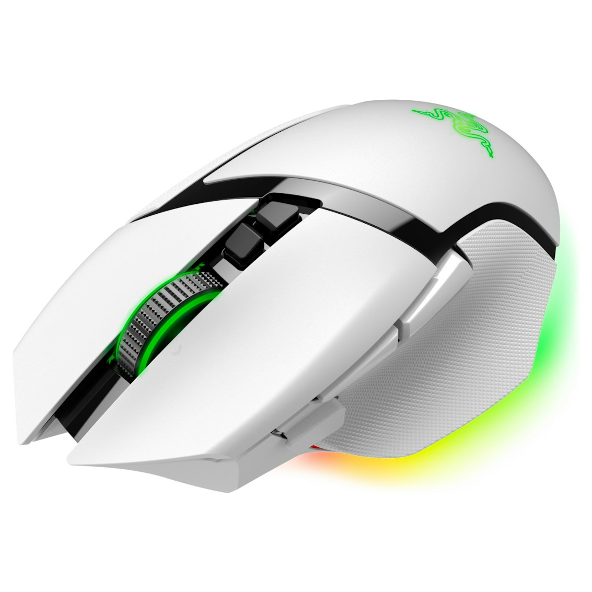

← 全部指南
Best Mouse for Work and Gaming 2026: What 4 Real Reviewers Agree On
基于 4 个 YouTube 测评聚合 · 更新于 2026-10-03

Razer Basilisk V3 Pro 35K
Omegaultra ran it as a Bluetooth work mouse for a week and a 2.4GHz gaming mouse for days - the most explicitly dual-duty hybrid actually tested
📊 对比一览
| # | 产品 | 推荐度 | 适合 | 价格 |
|---|
| 1 | Razer Basilisk V3 Pro 35K | 1/4 reviewers | Work and gaming all-rounder | $129-$160 |
| 2 | Logitech G Pro X2 Superstrike | 1/4 reviewers | Silent work, esports play | $179.99 |
| 3 | Razer Naga V3 Pro | 1/4 reviewers | Macro-heavy workflows and MMO | $179.99 |
| 4 | Corsair Scimitar Elite Wireless SE | 1/4 reviewers | Productivity power user | $99-$140 |
💬 测评共识
共同优点
- Razer Basilisk V3 Pro 35K: Omegaultra used it a week as a Bluetooth work mouse and days as a 2.4GHz gaming mouse (1/4 mention)
- Logitech G Pro X2 Superstrike: silent haptic clicks for work calls plus 8K esports performance - RemoteChance's pick if you work and game on one setup (1/4 mention)
- Razer Naga V3 Pro: Stuff's reviewer swapped to it as a home worker - swappable plates cover office and MMO duty (1/4 mention)
- Corsair Scimitar Elite Wireless SE: GamesRadar found it changed their work life - the button grid doubles as a macro pad (1/4 mention)
共同缺点
- Hybrid flagships cost $130-$180, more than a dedicated office or gaming mouse (2/4 mention)
- At 112-116g these are heavy for competitive FPS - pure esports mice are half the weight (2/4 mention)
- Software setup (Synapse, G Hub, iCUE) can be fiddly and Bluetooth polling lags behind 2.4GHz (1/4 mention)
🔍 详细解析
Razer Basilisk V3 Pro 35K
🛒 去 Amazon 购买 →Omegaultra ran it a week as a Bluetooth work mouse and days as a 2.4GHz gaming mouse: the HyperScroll tilt wheel and palm-friendly ergonomics serve both desks without compromise.
Battery life: ~140 hours
Buttons: 13 customizable controls
Sensor: Focus Pro 35K Optical
Weight: 112 g
适合：Work and gaming all-rounder · $129-$160
Logitech G Pro X2 Superstrike
🛒 去 Amazon 购买 →RemoteChance recommends it if you work and game on the same setup: silent haptic clicks that won't disturb calls, plus 8K esports-grade performance after hours.
Battery life: ~60-90 hours
Polling rate: Up to 8,000 Hz wireless
Sensor: HERO 2 (44,000 DPI)
Weight: 61 g
适合：Silent work, esports play · $179.99
Razer Naga V3 Pro
🛒 去 Amazon 购买 →Stuff's reviewer swapped their gaming mouse for it as a home worker and content creator: the 2-button plate plus tri-mode Bluetooth makes it a genuine dual-duty device.
Battery life: ~155 hours wireless
Buttons: 23 max (2/6/12-button swappable plates)
Sensor: Focus Pro 50K
Weight: 113-116 g
适合：Macro-heavy workflows and MMO · $179.99
Corsair Scimitar Elite Wireless SE
🛒 去 Amazon 购买 →GamesRadar's reviewer found it changed their work life more than their ranked position: the 12-button grid doubles as a Stream Deck-style macro pad for streaming and office shortcuts.
Battery life: ~150 hours (2.4GHz)
Buttons: 16 programmable, sliding Key Slider
Sensor: MARKSMAN S (33,000 DPI)
Weight: 114 g
适合：Productivity power user · $99-$140
📺 视频来源
展开查看 4 个测评视频
📺
Omegaultra — The Razer Basilisk V3 Pro 35K Refreshes An Already-Great Ergonomic Mouse
观看视频 / Watch📺
RemoteChance — Logitech G PRO X2 Superstrike vs Razer Viper V4 Pro: The 2026 Flagship Mouse Showdown
观看视频 / Watch📺
Stuff — Here's why I've swapped my gaming mouse for Razer's home worker- and content creator-friendly Naga V3 Pro
观看视频 / Watch📺
GamesRadar — I just reviewed Corsair's latest MMO mouse, but it's changed my work life far more than my ranked position
观看视频 / Watch